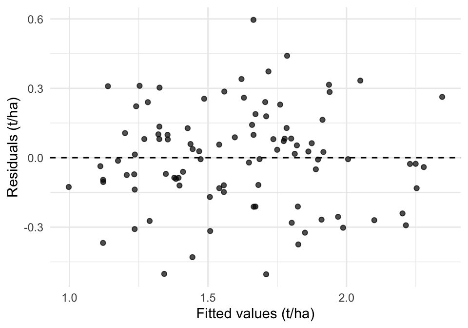
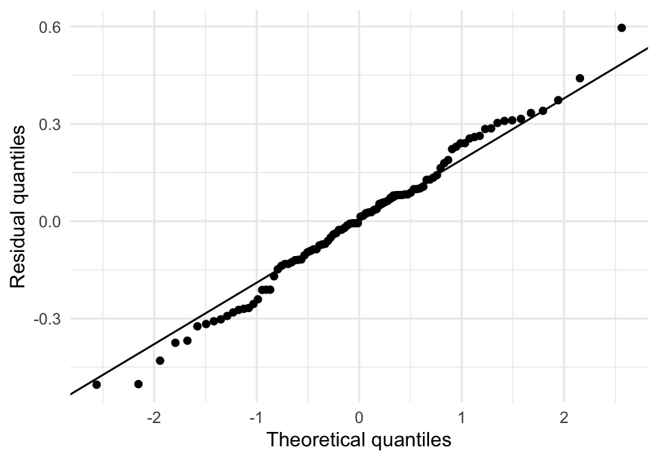
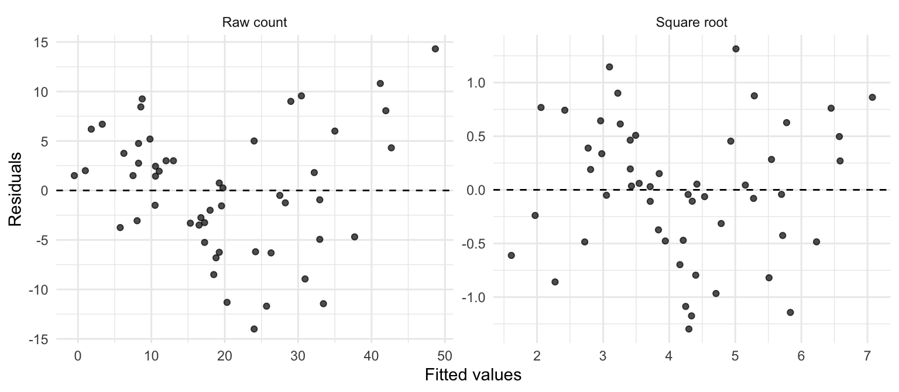
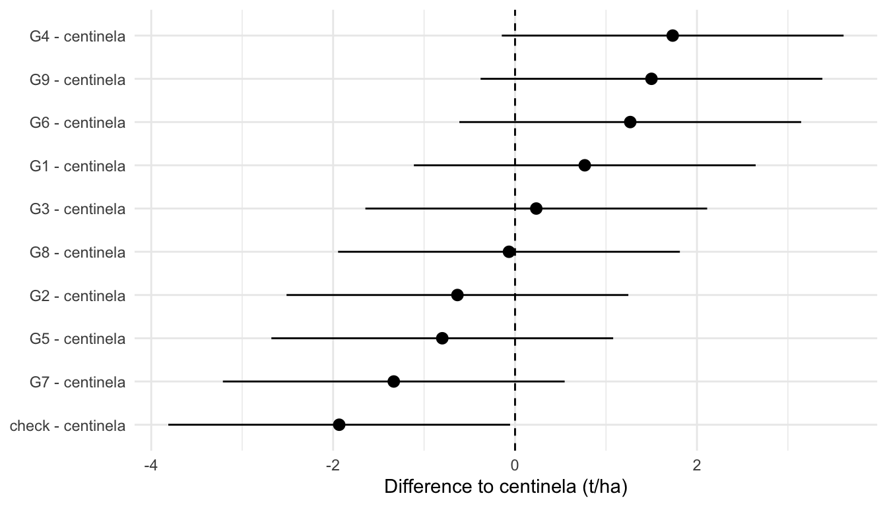
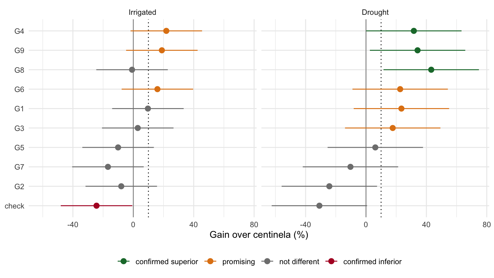

library(dplyr)
library(tidyr)
library(readr)
library(ggplot2)
library(emmeans)
library(agridat) # install.packages("agridat") if needed
library(agricolae) # install.packages("agricolae") if needed6 ANOVA and Mean Comparison in Breeding Trials
NoteSlides for this session
Author: Luis Fernando Delgado Muñoz
Session: Day 2, Tuesday 10 November, 13:30 to 17:00
6.1 Learning objectives
- Fit and read the ANOVA of a complete block design, and rebuild its sums of squares by hand
- Check the assumptions with residual diagnostics and decide when a transformation is needed
- Compare genotypes with LSD, Tukey and Dunnett, and know which question each one answers
- Distinguish statistical from practical significance
- Extend the ANOVA to augmented designs and to several environments
- Identify superior genotypes and turn statistical results into selection decisions
- Recognize the most common pitfalls when interpreting a comparison of means
In Chapter 5 we chose a design and wrote its model. This chapter fits that model with lm() and reads the result. The ANOVA answers one question: is there evidence of differences among the genotypes, once the blocks are removed? The comparison of means answers the next one: which genotypes differ, and by how much? For a breeder the second question matters most, because the aim is to decide which lines advance.
NotePackages in this chapter
Besides the course packages, this chapter uses only base R. Levene’s test is computed with a few lines of base R (it is an ANOVA on the absolute deviations from the group median), so no extra package is needed. The optional performance and multcomp calls are marked in the text.
6.2 The ANOVA of a randomized complete block design
We start with a real trial of durum wheat (Triticum durum) from Algeria: 24 genotypes in 22 environments, each environment an RCBD with 4 blocks. The data were collected in the course “Genotype to phenotype modelling of multi-environment trials” (Biometris, Wageningen University and Research; see Section 6.13) and are used here with permission. In this chapter we work on one environment at a time and leave the 22 together for the end.
durum <- read_csv("data/Durum_wheat_Algeria.csv", show_col_types = FALSE) |>
mutate(Genotype = factor(Genotype),
Block = factor(Block),
GenoGroup = trimws(GenoGroup))
durum |> count(Environment) |> head(3)# A tibble: 3 × 2
Environment n
<chr> <int>
1 loc01_year1 96
2 loc01_year2 96
3 loc02_year1 96e2 <- durum |> filter(Environment == "loc10_year1")
dim(e2)[1] 96 8Each environment has 96 plots: 24 genotypes in 4 blocks. The model is the one derived in Section 5.9:
yield = overall mean + block effect + genotype effect + errorfit <- lm(yield ~ Block + Genotype, data = e2)
anova(fit)Analysis of Variance Table
Response: yield
Df Sum Sq Mean Sq F value Pr(>F)
Block 3 3.9362 1.31206 20.6185 1.205e-09 ***
Genotype 23 5.4481 0.23687 3.7223 1.233e-05 ***
Residuals 69 4.3908 0.06364
---
Signif. codes: 0 '***' 0.001 '**' 0.01 '*' 0.05 '.' 0.1 ' ' 1The table partitions the total variation into three parts. The block line is the variation among the four blocks, the genotype line is the variation among the 24 genotype means, and the residual is what is left: the differences among plots of the same genotype within the same block. The residual mean square (Mean Sq of Residuals) is the estimate of the error variance, \(\sigma^2\), and every comparison of means below is built from it.
6.2.1 Rebuilding the table by hand
A balanced RCBD has a simple structure, and it is worth doing the arithmetic once. The sums of squares are the squared deviations of the block means, the genotype means and the observations from the overall mean:
y <- e2$yield
mu <- mean(y)
b <- nlevels(e2$Block) # blocks
g <- nlevels(e2$Genotype) # genotypes
ss_total <- sum((y - mu)^2)
ss_block <- g * sum((tapply(y, e2$Block, mean) - mu)^2)
ss_geno <- b * sum((tapply(y, e2$Genotype, mean) - mu)^2)
ss_error <- ss_total - ss_block - ss_geno
by_hand <- data.frame(
source = c("Block", "Genotype", "Error", "Total"),
df = c(b - 1, g - 1, (b - 1) * (g - 1), b * g - 1),
SS = c(ss_block, ss_geno, ss_error, ss_total)
)
by_hand$MS <- by_hand$SS / by_hand$df
by_hand$F <- c(by_hand$MS[1:2] / by_hand$MS[3], NA, NA)
by_hand source df SS MS F
1 Block 3 3.936194 1.31206452 20.618489
2 Genotype 23 5.448068 0.23687253 3.722343
3 Error 69 4.390838 0.06363534 NA
4 Total 95 13.775100 0.14500105 NAThese are the numbers of anova(fit). Three quantities summarize the trial and should always be reported:
mse <- by_hand$MS[3] # error variance
c(MSE = mse,
residual_sd = sqrt(mse),
CV_percent = 100 * sqrt(mse) / mu) MSE residual_sd CV_percent
0.06363534 0.25226046 15.63406080 The coefficient of variation (CV) is the residual standard deviation as a percentage of the mean. Values of 10 to 20% are usual for yield in field trials. A CV much higher than that points to a noisy trial, and the comparisons that follow will have little power.
The F value of the genotype line is the ratio of the variance among genotype means to the error variance. If all genotypes had the same true mean, F would be close to 1. Here F is 3.7 (p < 0.001), so the differences among genotypes are larger than the plot-to-plot noise can explain. Note also the block line: F = 21. The blocks differ strongly, and without them in the model that variation would have inflated the error and hidden part of the genotype differences. This is local control at work.
ImportantA significant F does not say which genotypes differ
The F test of the genotype line is a global test: at least one genotype is different from the others. It does not identify which one. For that we need the comparisons of means in the sections below.
6.3 Checking the assumptions
The F test and the comparisons of means assume that the errors are independent, have the same variance for all genotypes, and are approximately normal. We check these assumptions on the residuals of the model, not on the raw data, because the raw data contain the genotype and block effects.
res <- data.frame(fitted = fitted(fit), resid = resid(fit))
p1 <- ggplot(res, aes(fitted, resid)) +
geom_hline(yintercept = 0, linetype = 2) +
geom_point(alpha = 0.7) +
labs(x = "Fitted values (t/ha)", y = "Residuals (t/ha)") +
theme_minimal()
p2 <- ggplot(res, aes(sample = resid)) +
stat_qq() + stat_qq_line() +
labs(x = "Theoretical quantiles", y = "Residual quantiles") +
theme_minimal()
print(p1)
print(p2)

shapiro.test(resid(fit)) # normality of residuals
Shapiro-Wilk normality test
data: resid(fit)
W = 0.99226, p-value = 0.8572# Levene (median version): ANOVA of the absolute deviations from each genotype median
levene <- function(y, group) anova(lm(abs(y - ave(y, group, FUN = median)) ~ group))
levene(e2$yield, e2$Genotype) # equal variance among genotypesAnalysis of Variance Table
Response: abs(y - ave(y, group, FUN = median))
Df Sum Sq Mean Sq F value Pr(>F)
group 23 1.0028 0.043599 0.9837 0.496
Residuals 72 3.1913 0.044323 How to read them:
- Residuals against fitted values. A random cloud around zero is what we want. A funnel (spread growing with the mean) means the variance depends on the mean; a curve means the model is missing a term.
- QQ plot. Points on the line mean normal residuals. Moderate departures in the tails matter little with 20 or more residual degrees of freedom; the F test is robust to them.
- Shapiro-Wilk and Levene. The first tests normality, the second tests equal variance among genotypes. With so few plots per genotype, Levene has low power. Use the plots first and the tests as a support.
- Outliers. A residual larger than about three residual standard deviations deserves a look at the field book. The reason is usually a recording error or a plot with a problem, and it should be corrected or removed with a note, never silently. This is the model-based version of the checks of Chapter 4.
The performance package gives the same panels in one call, with the model’s own tests:
# optional: install.packages("performance")
performance::check_model(fit)6.3.1 When the variance depends on the mean: transformations
Counts and proportions often fail the equal variance assumption, because their variance grows with the mean. A real example is the count of webworms in a sugar beet field, in 13 blocks, under 4 insecticide treatments (Beall, 1940, via agridat). Each plot was recorded in 25 unit areas; to analyse one value per plot we add the counts of the 25 unit areas, so that the experimental unit is the plot and not the unit area.
worms <- beall.webworms |>
group_by(block, trt) |>
summarise(count = sum(y), .groups = "drop")
# variance grows with the mean
worms |>
group_by(trt) |>
summarise(mean = mean(count), variance = var(count))# A tibble: 4 × 3
trt mean variance
<fct> <dbl> <dbl>
1 T1 35 216.
2 T2 12.6 17.4
3 T3 21.3 107.
4 T4 10.3 29.4The treatment with the highest mean has also the highest variance (a variance more than ten times that of the treatments with low counts). The residuals of the model on the raw counts show it, and the square root of the count corrects it:
f_raw <- lm(count ~ block + trt, data = worms)
f_sqrt <- lm(sqrt(count) ~ block + trt, data = worms)
bind_rows(
data.frame(scale = "Raw count", fitted = fitted(f_raw), resid = resid(f_raw)),
data.frame(scale = "Square root", fitted = fitted(f_sqrt), resid = resid(f_sqrt))
) |>
mutate(scale = factor(scale, levels = c("Raw count", "Square root"))) |>
ggplot(aes(fitted, resid)) +
geom_hline(yintercept = 0, linetype = 2) +
geom_point(alpha = 0.7) +
facet_wrap(~scale, scales = "free") +
labs(x = "Fitted values", y = "Residuals") +
theme_minimal()
# correlation between |residual| and fitted: near zero when the variance is stable
c(raw = cor(abs(resid(f_raw)), fitted(f_raw)),
sqrt = cor(abs(resid(f_sqrt)), fitted(f_sqrt))) raw sqrt
0.40446617 0.07382039 
Use this table to choose the transformation:
| Data | Typical transformation |
|---|---|
| Counts (insects, plants, lesions) | square root, \(\sqrt{y + 0.5}\) if there are zeros |
| Variance proportional to the square of the mean | logarithm, \(\log(y)\) or \(\log(y + 1)\) |
| Proportions (percentage of infection) | arcsine of the square root, or better a binomial model (Chapter 7) |
Two cautions. First, a transformation changes the scale of the means: report the means on the transformed scale and back-transform them, or fit a model for counts directly. Second, do not transform yield to fix a single outlier; investigate the outlier.
6.4 Comparing the means of genotypes
The ANOVA tells us there are differences. To say which genotypes differ, we compare means. For this section we use a rice trial in which a control is present.
6.4.1 The rice trial
Example_rice.csv has 72 plots of 11 genotypes: nine lines (G1 to G9), the variety centinela and a check, under two water regimes: irrigated and drought. Each regime is an RCBD with 3 blocks. The variety centinela is the parent used as reference: it is in the field twice in every block (6 plots per regime), the rest of the genotypes once.
rice <- read_csv("data/Example_rice.csv",
locale = locale(encoding = "latin1"), show_col_types = FALSE) |>
mutate(env = if_else(grepl("^Irri", TRAT), "Irrigated", "Drought"),
GEN = relevel(factor(GEN), ref = "centinela"),
Bloq = factor(Bloq))
irr <- rice |> filter(env == "Irrigated")
irr |> count(GEN)# A tibble: 11 × 2
GEN n
<fct> <int>
1 centinela 6
2 check 3
3 G1 3
4 G2 3
5 G3 3
6 G4 3
7 G5 3
8 G6 3
9 G7 3
10 G8 3
11 G9 3fit_irr <- lm(REND ~ Bloq + GEN, data = irr)
anova(fit_irr)Analysis of Variance Table
Response: REND
Df Sum Sq Mean Sq F value Pr(>F)
Bloq 2 1.594 0.7969 0.9977 0.3841461
GEN 10 42.052 4.2052 5.2643 0.0004845 ***
Residuals 23 18.373 0.7988
---
Signif. codes: 0 '***' 0.001 '**' 0.01 '*' 0.05 '.' 0.1 ' ' 1c(MSE = deviance(fit_irr) / df.residual(fit_irr),
df = df.residual(fit_irr),
CV = 100 * sigma(fit_irr) / mean(irr$REND)) MSE df CV
0.7988164 23.0000000 11.1798301 The F test for genotypes is significant (p < 0.001). The assumptions hold:
shapiro.test(resid(fit_irr))$p.value[1] 0.158161levene(irr$REND, irr$GEN)$`Pr(>F)`[1][1] 0.9930382(Plot the residuals as in the previous section.) The control is replicated twice per block, so the design is not balanced: the model still works, and emmeans gives the correct adjusted means.
em <- emmeans(fit_irr, ~ GEN)
em GEN emmean SE df lower.CL upper.CL
centinela 7.93 0.365 23 7.18 8.69
check 6.00 0.516 23 4.93 7.07
G1 8.70 0.516 23 7.63 9.77
G2 7.30 0.516 23 6.23 8.37
G3 8.17 0.516 23 7.10 9.23
G4 9.67 0.516 23 8.60 10.73
G5 7.13 0.516 23 6.07 8.20
G6 9.20 0.516 23 8.13 10.27
G7 6.60 0.516 23 5.53 7.67
G8 7.87 0.516 23 6.80 8.93
G9 9.43 0.516 23 8.37 10.50
Results are averaged over the levels of: Bloq
Confidence level used: 0.95 6.4.2 The problem of multiple comparisons
With 11 genotypes there are 55 pairs of genotypes. If we test each pair at the 5% level and there were no real differences at all, we would still expect about 3 “significant” differences by chance (55 × 0.05). Every procedure below deals with this problem in a different way.
| Procedure | What it controls | When to use it |
|---|---|---|
| LSD (Fisher) | Nothing: each comparison at 5% | Only after a significant F; few comparisons, or screening where a miss is costlier than a false positive |
| Duncan | Less protection than Tukey, more than LSD; no control of the error of all comparisons | Common in the literature; not recommended for selection decisions |
| Tukey HSD | The error of all pairwise comparisons together | Every genotype is compared with every other; the conservative choice |
| Dunnett | The error of the comparisons with one control | New lines against a parent or a check |
6.4.3 LSD and Tukey
The LSD is the smallest difference between two means that is significant at the 5% level. With the residual mean square of the ANOVA, agricolae computes it and gives the groups:
lsd <- LSD.test(fit_irr, "GEN", console = FALSE)
lsd$statistics MSerror Df Mean CV
0.7988164 23 7.994444 11.17983lsd$groups REND groups
G4 9.666667 a
G9 9.433333 a
G6 9.200000 ab
G1 8.700000 abc
G3 8.166667 abcd
centinela 7.933333 bcd
G8 7.866667 bcde
G2 7.300000 cdef
G5 7.133333 def
G7 6.600000 ef
check 6.000000 ftuk <- HSD.test(fit_irr, "GEN", console = FALSE)
tuk$groups REND groups
G4 9.666667 a
G9 9.433333 a
G6 9.200000 a
G1 8.700000 ab
G3 8.166667 abc
centinela 7.933333 abc
G8 7.866667 abc
G2 7.300000 abc
G5 7.133333 abc
G7 6.600000 bc
check 6.000000 cMeans that share a letter are not significantly different. The LSD gives more groups and more separation than Tukey. The best line, G4, is separated by the LSD from six genotypes (centinela, G8, G2, G5, G7 and the check), and by Tukey from only two (G7 and the check). The LSD separates more because it is not protected against the 55 comparisons.
6.4.4 Duncan
Duncan’s multiple range test is still very common in the agricultural literature, and agricolae runs it with the same syntax:
duncan.test(fit_irr, "GEN", console = FALSE)$groups REND groups
G4 9.666667 a
G9 9.433333 ab
G6 9.200000 ab
G1 8.700000 abc
G3 8.166667 abcd
centinela 7.933333 bcd
G8 7.866667 bcd
G2 7.300000 cde
G5 7.133333 cde
G7 6.600000 de
check 6.000000 eIts groups lie between those of the LSD and those of Tukey: it separates G4 from the same six genotypes as the LSD, but G9 and G6 now share a group with lower genotypes. Duncan’s test makes the critical difference grow with the number of means between the two compared, which protects against some false positives, but it does not control the error of all the comparisons together. If a paper reports Duncan letters, read them as a screening; for decisions use Tukey (all pairs) or Dunnett (against a control).
The letters can also be obtained from an emmeans object, which works for any model, including the mixed models of Chapter 7. This needs the multcomp package (install.packages("multcomp")):
multcomp::cld(em, Letters = letters, adjust = "tukey", reversed = TRUE)
WarningLetters are a summary, not a decision
Letters hide the size of the differences and the uncertainty of the means. Two genotypes with no letter in common can differ by a small amount, and two genotypes sharing a letter can differ by a large amount that the trial could not confirm. Report the difference with its confidence interval, as in the next sections.
6.4.5 Dunnett: new lines against a control
In a breeding trial the real question is rarely “are all pairs different?”. It is: is any new line better than the parent or the check? This is a comparison of each line with one control: 10 comparisons instead of 55, and Dunnett’s test controls the error of those 10 together.
dun <- contrast(em, method = "trt.vs.ctrl", ref = 1) # reference: centinela
dun_tab <- summary(dun, infer = TRUE)
dun_tab |>
mutate(across(where(is.numeric), \(x) round(x, 3))) contrast estimate SE df lower.CL upper.CL t.ratio p.value
1 check - centinela -1.933 0.632 23 -3.812 -0.054 -3.059 0.041
2 G1 - centinela 0.767 0.632 23 -1.112 2.646 1.213 0.763
3 G2 - centinela -0.633 0.632 23 -2.512 1.246 -1.002 0.865
4 G3 - centinela 0.233 0.632 23 -1.646 2.112 0.369 0.996
5 G4 - centinela 1.733 0.632 23 -0.146 3.612 2.743 0.081
6 G5 - centinela -0.800 0.632 23 -2.679 1.079 -1.266 0.734
7 G6 - centinela 1.267 0.632 23 -0.612 3.146 2.004 0.310
8 G7 - centinela -1.333 0.632 23 -3.212 0.546 -2.110 0.262
9 G8 - centinela -0.067 0.632 23 -1.946 1.812 -0.105 1.000
10 G9 - centinela 1.500 0.632 23 -0.379 3.379 2.373 0.166Each row is the difference between a genotype and centinela, with its standard error, confidence interval and the Dunnett-adjusted p. The standard error is the same for all lines (the control is replicated 6 times and the lines 3 times). Compare with the same 10 tests without adjustment:
unadj <- summary(contrast(em, "trt.vs.ctrl", ref = 1), adjust = "none")
c(unadjusted_p_below_0.05 = sum(unadj$p.value < 0.05),
dunnett_p_below_0.05 = sum(dun_tab$p.value < 0.05))unadjusted_p_below_0.05 dunnett_p_below_0.05
4 1 Without protection, 4 of the 10 lines look different from the control; Dunnett’s test confirms only one (the check, which is lower than the parent). The three extra lines with p near 0.01 to 0.05 in the unadjusted tests are the ones that the adjustment removes. They may be real, but this trial cannot confirm them.
dun_tab |>
mutate(contrast = reorder(contrast, estimate)) |>
ggplot(aes(estimate, contrast)) +
geom_vline(xintercept = 0, linetype = 2) +
geom_pointrange(aes(xmin = lower.CL, xmax = upper.CL)) +
labs(x = "Difference to centinela (t/ha)", y = NULL) +
theme_minimal()
If the only question is whether a line is better than the control, a one-sided test is justified, but it must be decided before the trial. In the course we use two-sided intervals, because a line worse than the parent is also information.
6.5 Statistically significant is not the same as useful
A p-value says whether a difference could be due to chance. It does not say whether the difference is big enough to matter. Three numbers answer that and should be read together:
- The size of the difference, in t/ha and as a percentage of the control.
- The confidence interval, which gives the range of differences compatible with the data.
- The smallest difference that matters to the breeder, decided before the trial (for example 10% of the yield of the parent).
ctrl_mean <- summary(em) |> filter(GEN == "centinela") |> pull(emmean)
dun_tab |>
mutate(gain_percent = 100 * estimate / ctrl_mean) |>
select(contrast, estimate, lower.CL, upper.CL, gain_percent, p.value) |>
arrange(desc(estimate)) |>
head(4) |>
mutate(across(where(is.numeric), \(x) round(x, 2))) contrast estimate lower.CL upper.CL gain_percent p.value
1 G4 - centinela 1.73 -0.15 3.61 21.85 0.08
2 G9 - centinela 1.50 -0.38 3.38 18.91 0.17
3 G6 - centinela 1.27 -0.61 3.15 15.97 0.31
4 G1 - centinela 0.77 -1.11 2.65 9.66 0.76G4 yields about 1.7 t/ha more than the parent, which is +22%. The Dunnett p is 0.08, so it is not significant at 5%, and the interval goes from about -0.1 to +3.6 t/ha. Two different conclusions are possible and both are wrong if stated alone:
- “There is no difference between
G4and the parent”: wrong. The trial failed to detect a difference of the size seen; it did not show that there is none. - “
G4is 22% better”: too strong. The trial is compatible with a gain of almost nothing and with a gain of more than 3 t/ha.
The honest conclusion is that G4 is a promising line that needs more replication or more environments. The cause is the precision of the trial:
# smallest difference between two genotypes (3 plots each) detectable at 5% (LSD)
lsd_value <- qt(0.975, df.residual(fit_irr)) * sqrt(2 * sigma(fit_irr)^2 / 3)
c(LSD_t_ha = lsd_value, LSD_percent_of_mean = 100 * lsd_value / mean(irr$REND)) LSD_t_ha LSD_percent_of_mean
1.509616 18.883313 With 3 replicates and a CV of 11%, this trial cannot confirm differences smaller than about 1.5 t/ha, which is about 19% of the mean. If the breeder cares about a 10% gain, the trial is under-powered, and the options are more replicates, a design with smaller blocks (Chapter 5), or several environments (Chapter 11).
6.6 Augmented designs
In early generations there is seed for one plot per line (Chapter 5). The augmented design puts a few replicated checks in every block and the new lines once. The checks estimate the error and the block effects; the new lines are adjusted for the blocks. The model is the same as for an RCBD, fitted with lm():
The dataset kling.augmented in agridat is a real example: 50 new lines of meadowfoam (one plot each) and 3 checks (G89, G90, G91, in every block), in 6 blocks, with the response thousand-seed weight (tsw).
aug <- kling.augmented |>
mutate(gen = droplevels(gen),
type = if_else(gen %in% c("G89", "G90", "G91"), "check", "new"))
aug |> count(type) type n
1 check 18
2 new 50aug |> count(block, type) |> pivot_wider(names_from = type, values_from = n)# A tibble: 6 × 3
block check new
<fct> <int> <int>
1 B1 3 9
2 B2 3 9
3 B3 3 9
4 B4 3 9
5 B5 3 9
6 B6 3 5fit_aug <- lm(tsw ~ block + gen, data = aug)
anova(fit_aug)Analysis of Variance Table
Response: tsw
Df Sum Sq Mean Sq F value Pr(>F)
block 5 1.7112 0.34224 4.9028 0.0158408 *
gen 52 27.5185 0.52920 7.5811 0.0007876 ***
Residuals 10 0.6981 0.06981
---
Signif. codes: 0 '***' 0.001 '**' 0.01 '*' 0.05 '.' 0.1 ' ' 1c(MSE = deviance(fit_aug) / df.residual(fit_aug),
df = df.residual(fit_aug),
CV = 100 * sigma(fit_aug) / mean(aug$tsw)) MSE df CV
0.06980556 10.00000000 2.60012792 Look at the residual: only 10 degrees of freedom. They come from the checks only: 3 checks in 6 blocks give (6 - 1) × (3 - 1) = 10. The new lines, with one plot each, contribute nothing to the error. That is the cost of the design. The error is estimated from the checks only, and with 10 df the comparisons have little power and the estimate is itself uncertain.
The adjusted means of the new lines remove the block effect:
em_aug <- emmeans(fit_aug, ~ gen)
em_df <- as.data.frame(em_aug)
# top five lines, adjusted for blocks
em_df |>
arrange(desc(emmean)) |>
head(5) |>
mutate(across(where(is.numeric), \(x) round(x, 2))) gen emmean SE df lower.CL upper.CL
1 G31 12.35 0.3 10 11.68 13.01
2 G30 11.78 0.3 10 11.11 12.44
3 G11 11.75 0.3 10 11.08 12.41
4 G23 11.15 0.3 10 10.49 11.82
5 G36 11.04 0.3 10 10.37 11.70The standard errors differ by the type of comparison: two checks, a check and a new line, and two new lines have different SEDs, because the checks are replicated and the new lines are not:
chk <- c("G89", "G90", "G91")
pw <- as.data.frame(pairs(em_aug, adjust = "none"))
pw$a <- sub(" - .*", "", pw$contrast)
pw$b <- sub(".* - ", "", pw$contrast)
pw$type <- case_when(pw$a %in% chk & pw$b %in% chk ~ "check vs check",
pw$a %in% chk | pw$b %in% chk ~ "new vs check",
TRUE ~ "new vs new")
pw |> group_by(type) |> summarise(SED = mean(SE), .groups = "drop")# A tibble: 3 × 2
type SED
<chr> <dbl>
1 check vs check 0.153
2 new vs check 0.318
3 new vs new 0.422For selection, compare the new lines with the mean of the checks (or the best check) and consider the large SED of two unreplicated lines. In Chapter 9 and Chapter 7 we will see how a spatial or a mixed model uses all the plots to estimate the error and improves the augmented analysis.
6.7 More than one environment
Breeding decisions rely on several environments. The simplest extension of the ANOVA is to put the environments and the genotypes in the same model, with the interaction between them.
6.7.1 Two water regimes in rice
Rice under irrigation and under drought, 3 blocks in each. The block effect is nested in the environment (the blocks of one regime are not the blocks of the other):
fit_2env <- lm(REND ~ env / Bloq + GEN * env, data = rice)
anova(fit_2env)Analysis of Variance Table
Response: REND
Df Sum Sq Mean Sq F value Pr(>F)
env 1 228.267 228.267 390.4503 < 2.2e-16 ***
GEN 10 63.909 6.391 10.9315 3.24e-09 ***
env:Bloq 4 2.349 0.587 1.0044 0.4150
env:GEN 10 7.789 0.779 1.3322 0.2424
Residuals 46 26.893 0.585
---
Signif. codes: 0 '***' 0.001 '**' 0.01 '*' 0.05 '.' 0.1 ' ' 1Environment (irrigated against drought) explains most of the variation: the drought regime reduces the yield strongly. The genotype effect is significant, and the genotype by environment interaction is not (p = 0.24): the lines keep a similar ranking in both regimes. If it were significant, the best genotype in one regime would not be the best in the other, and we would need to analyse each regime separately and decide which one matters for the target population.
6.7.2 Durum wheat in 22 environments
The Algerian durum wheat trial has 24 genotypes in 22 environments. Here the interaction is the main story:
fit_met <- lm(yield ~ Environment / Block + Genotype * Environment, data = durum)
anova(fit_met)Analysis of Variance Table
Response: yield
Df Sum Sq Mean Sq F value Pr(>F)
Environment 21 935.95 44.569 537.1651 < 2.2e-16 ***
Genotype 23 80.84 3.515 42.3627 < 2.2e-16 ***
Environment:Block 66 117.69 1.783 21.4909 < 2.2e-16 ***
Environment:Genotype 483 151.66 0.314 3.7845 < 2.2e-16 ***
Residuals 1518 125.95 0.083
---
Signif. codes: 0 '***' 0.001 '**' 0.01 '*' 0.05 '.' 0.1 ' ' 1All the terms are highly significant. The genotype by environment line (Genotype:Environment) has a mean square about 4 times the residual: the ranking of the genotypes changes across environments. Which F do we use to test the genotypes? The residual mean square (0.083) is the error between plots of the same genotype in the same environment, but the environments are a sample of the target environments. The correct denominator for genotypes is the interaction mean square:
a <- anova(fit_met)
ms <- setNames(a$`Mean Sq`, rownames(a))
F_geno <- ms["Genotype"] / ms["Environment:Genotype"]
c(F_residual = unname(ms["Genotype"] / ms["Residuals"]),
F_interaction = unname(F_geno),
p_value = unname(pf(F_geno, a["Genotype", "Df"], a["Environment:Genotype", "Df"], lower.tail = FALSE))) F_residual F_interaction p_value
4.236266e+01 1.119373e+01 2.886352e-32 The F against the interaction (11) is much smaller than the F against the residual (42), but it is still highly significant. The genotypes differ on average over the environments, in addition to the interaction.
The mean squares also give the variance components, which are the basis of heritability (Section 7.7). With \(r\) = 4 blocks and \(e\) = 22 environments, from the expected mean squares:
r <- 4; e <- 22
s2_e <- ms["Residuals"]
s2_ge <- (ms["Environment:Genotype"] - ms["Residuals"]) / r
s2_g <- (ms["Genotype"] - ms["Environment:Genotype"]) / (r * e)
round(c(genotype = unname(s2_g), GxE = unname(s2_ge), error = unname(s2_e)), 4)genotype GxE error
0.0364 0.0578 0.0830 The genotype by environment variance is larger than the genotype variance. This is why one environment is not enough to choose the genotypes, and why the next sessions model G×E (Chapter 11) and estimate the components with a mixed model (Chapter 7).
6.8 Identifying superior genotypes
The comparison of means ends in a decision: which lines advance to the next stage, which are tested again, and which are dropped. A decision rule written before looking at the results avoids choosing the criterion that gives the answer we like. For a trial with a parent (or a check) the rule has three parts:
- The reference: the parent or the best check, with its adjusted mean.
- The smallest gain that matters: for example 10% over the parent. A line that is better by less than this is not worth the cost of advancing it.
- The evidence: the Dunnett confidence interval of the difference to the reference, which already accounts for the number of lines compared.
With these we classify every line:
| Class | Rule | Decision |
|---|---|---|
| Confirmed superior | Dunnett interval of the difference above zero | Advance |
| Promising | Estimated gain at least the smallest gain that matters, but the interval includes zero | Test again with more replication or more environments |
| Not different | Gain smaller than the threshold, interval includes zero | Drop, or keep only for other traits |
| Confirmed inferior | Interval below zero | Drop |
6.8.1 An example on the rice trial
The function below applies the rule to one environment. We run it on the irrigated and on the drought trial, with centinela as the reference and 10% as the smallest gain that matters.
classify <- function(d, env_name) {
fit <- lm(REND ~ Bloq + GEN, data = d)
em <- emmeans(fit, ~ GEN)
ctrl <- summary(em)$emmean[1] # centinela is the reference level
summary(contrast(em, "trt.vs.ctrl", ref = 1), infer = TRUE) |>
mutate(env = env_name,
line = sub(" - centinela", "", contrast),
pct = 100 * estimate / ctrl,
pct_lower = 100 * lower.CL / ctrl,
pct_upper = 100 * upper.CL / ctrl,
class = case_when(lower.CL > 0 ~ "confirmed superior",
upper.CL < 0 ~ "confirmed inferior",
pct >= 10 ~ "promising",
TRUE ~ "not different"))
}
sel <- bind_rows(classify(filter(rice, env == "Irrigated"), "Irrigated"),
classify(filter(rice, env == "Drought"), "Drought"))sel |>
mutate(class = factor(class, levels = c("confirmed superior", "promising",
"not different", "confirmed inferior")),
env = factor(env, levels = c("Irrigated", "Drought"))) |>
ggplot(aes(pct, reorder(line, pct), colour = class)) +
geom_vline(xintercept = 0, linetype = 1, colour = "grey60") +
geom_vline(xintercept = 10, linetype = 3) +
geom_pointrange(aes(xmin = pct_lower, xmax = pct_upper)) +
facet_wrap(~env) +
scale_colour_manual(values = c("confirmed superior" = "#1b7837",
"promising" = "#e08214",
"not different" = "grey50",
"confirmed inferior" = "#b2182b")) +
labs(x = "Gain over centinela (%)", y = NULL, colour = NULL) +
theme_minimal() + theme(legend.position = "bottom")
# Class of each line in the two regimes
sel |>
select(line, env, class) |>
pivot_wider(names_from = env, values_from = class) |>
arrange(Drought, Irrigated)# A tibble: 10 × 3
line Irrigated Drought
<chr> <chr> <chr>
1 G8 not different confirmed superior
2 G4 promising confirmed superior
3 G9 promising confirmed superior
4 check confirmed inferior not different
5 G2 not different not different
6 G5 not different not different
7 G7 not different not different
8 G1 not different promising
9 G3 not different promising
10 G6 promising promising Read the figure by rows of evidence:
G9andG4are promising under irrigation (+19% and +22%, interval includes zero) and confirmed superior under drought (+34% and +32%). They are the first candidates to advance: the same direction in two environments is stronger evidence than a p-value in one.G8is confirmed superior under drought (+43%) but equal to the parent under irrigation. It is a candidate for drought-prone sites, not a general one. Remember that the genotype by regime interaction was not significant in this trial (Section 6.7), so differences between the two regimes should not be over-interpreted with 3 blocks.G6is promising in both regimes, without confirmation in either: retest.- The
checkis confirmed inferior under irrigation. It tells us that the trial can detect a difference when it is large.
6.8.2 Is a line superior everywhere? Durum wheat in 22 environments
Two environments are a start. The Algerian durum trial has 22. We compare every genotype with WAHA in each environment separately (Dunnett, as before), and count the environments where the genotype is better, and where it is significantly better or worse.
durum_w <- durum |> mutate(Genotype = relevel(Genotype, ref = "WAHA"))
vs_waha <- durum_w |>
group_split(Environment) |>
lapply(function(e) {
f <- lm(yield ~ Block + Genotype, data = e)
em <- emmeans(f, ~ Genotype)
s <- as.data.frame(summary(contrast(em, "trt.vs.ctrl", ref = 1)))
s$Environment <- e$Environment[1]
s$waha <- summary(em)$emmean[1]
s
}) |>
bind_rows() |>
mutate(line = gsub("[()]", "", sub(" - WAHA$", "", contrast)))
consistency <- vs_waha |>
group_by(line) |>
summarise(better_in = sum(estimate > 0),
significantly_higher = sum(p.value < 0.05 & estimate > 0),
significantly_lower = sum(p.value < 0.05 & estimate < 0),
mean_gain_percent = round(mean(100 * estimate / waha), 1),
.groups = "drop") |>
arrange(desc(better_in), desc(significantly_higher))
head(consistency, 6)# A tibble: 6 × 5
line better_in significantly_higher significantly_lower mean_gain_percent
<chr> <int> <int> <int> <dbl>
1 GTADUR 16 2 2 9.2
2 CHENS 15 2 1 6.8
3 SIMETO 13 2 3 3.2
4 SAHEL77 12 5 2 5.9
5 B.DUR194 12 2 3 4
6 OFANTO 12 2 2 3.2No genotype is better than WAHA in all environments. The best, GTADUR, is above WAHA in 16 of 22 environments, with an average gain of about 9%, and it is significantly higher in 2 and significantly lower in 2. Compare with the exercise: OFANTO was 45% above WAHA in loc07_year1, but over the 22 environments the average gain is about 3%. One environment can show a spectacular difference that the rest do not confirm.
6.8.3 The best lines of one environment are not as good elsewhere
When we choose the best lines because they were the best in a trial, their observed advantage includes a part of luck (good plots, good blocks) that will not be repeated. This is the selection bias (also called winner’s curse). We can measure it in the durum data: in each environment we select the 3 best genotypes and compare their advantage over the environment mean where they were selected and in the other 21 environments.
env_means <- durum |>
group_by(Environment, Genotype) |>
summarise(y = mean(yield), .groups = "drop") |>
group_by(Environment) |>
mutate(dev = y - mean(y)) |> # deviation from the environment mean
ungroup()
bias <- bind_rows(lapply(unique(env_means$Environment), function(en) {
top <- env_means |> filter(Environment == en) |> slice_max(y, n = 3) |> pull(Genotype)
data.frame(Environment = en,
where_selected = mean(env_means$dev[env_means$Environment == en &
env_means$Genotype %in% top]),
other_envs = mean(env_means$dev[env_means$Environment != en &
env_means$Genotype %in% top]))
}))
colMeans(bias[, c("where_selected", "other_envs")]) # advantage in t/hawhere_selected other_envs
0.4800213 0.1483397 mean(bias$other_envs > 0) # share of environments with a real advantage[1] 0.9090909The three best genotypes of an environment are, on average, 0.48 t/ha above the environment mean where they were selected, and only 0.15 t/ha above the mean in the other environments: about two thirds of the apparent advantage disappears. The selection is not useless (in 91% of the cases the selected lines are still above average elsewhere), but the gain we will see in the next stage is smaller than the gain we saw when we selected. Three practical consequences:
- Select more lines than we need at the first stage, and let the next stage decide.
- Use the adjusted means and the interval, not the raw ranking.
- Confirm in other environments or seasons before releasing or submitting a line.
6.8.4 A decision rule
TipFrom the trial to the decision
- Fix the reference and the smallest gain that matters before the trial.
- Fit the model of the design, check the residuals, and get the adjusted means.
- Compare all lines with the reference (Dunnett) and classify them: confirmed superior, promising, not different, confirmed inferior.
- Advance the confirmed lines and the promising lines that are in the same direction in more than one environment or season.
- Retest the other promising lines; drop the rest.
- Keep more lines than the final number needed, because the advantage of the selected lines shrinks in the next stage.
- Report the difference, its interval and the percentage over the reference, not only the letters.
6.9 Common interpretation pitfalls
| Pitfall | Why it misleads | What to do |
|---|---|---|
| Reading the letters as a ranking of true values | Letters hide the size of the differences and their uncertainty | Report differences with intervals |
| “Not significant” means “equal” | The trial may not have power to detect the difference (G4: +22%, p = 0.08) | Look at the interval and at the minimum detectable difference |
| Many unadjusted tests | With 55 pairs, about 3 false positives are expected by chance | Use Tukey for all pairs, Dunnett against a control |
| Using the wrong reference | The conclusion changes if the control is the parent, a check or the trial mean | Decide the reference before the trial |
| Analysing one environment only | A line that wins in one environment may not win in others (G x E) | Use several environments or seasons; look at the consistency |
| Selection bias | The advantage observed in the selected lines is partly luck | Select more lines than needed and confirm in the next stage |
| Skipping the diagnostics | A funnel in the residuals or an outlier changes the standard errors | Check the residuals before the comparisons |
| Transforming the data without going back | Means on the square root scale are not on the original scale | Back-transform the means, or use a model for counts |
| Treating subsamples as replicates | Plants in the same plot are not independent replicates (pseudoreplication) | Average the subsamples to one value per plot |
| Ignoring missing plots | Unbalanced data change the standard errors by genotype | Use adjusted means (emmeans), not raw means |
| One p-value as the decision | It says nothing about the size of the gain | Combine size, interval and the smallest gain that matters |
6.10 Questions for discussion
Use these questions to connect the session with your own trials:
- In your program, what is the reference against which a new line must be compared? A parent, a check, or both?
- What is the smallest gain that would make you advance a line? Is it the same for yield and for disease resistance?
- How many replicates and environments do you have in the first trials of a mutant population? What difference could you detect with them?
- How many lines do you advance from one stage to the next, and how many would you advance knowing the selection bias?
- Which of the pitfalls of the table have you met in your own data?
6.11 Exercise
Use the Algerian durum wheat data in the environment loc07_year1.
- Fit the RCBD model and write the ANOVA table. What are the CV and the residual degrees of freedom?
- Check the assumptions with a residual plot, a QQ plot and Levene’s test.
- Calculate the LSD at 5% and the Tukey groups.
- Compare all the genotypes with
WAHA, a widely grown variety, using Dunnett. Which genotypes are significantly higher? How many differences would the unadjusted tests have declared? - Express the best genotype as a percentage of
WAHA, with its confidence interval. Is it above 10%?
TipSolution
e5 <- durum |>
filter(Environment == "loc07_year1") |>
mutate(Genotype = relevel(Genotype, ref = "WAHA"))
# 1. ANOVA, CV, residual df
fit5 <- lm(yield ~ Block + Genotype, data = e5)
anova(fit5)
c(CV = 100 * sigma(fit5) / mean(e5$yield), df = df.residual(fit5))
# 2. Assumptions (the `levene` function is defined in the chapter)
par(mfrow = c(1, 2)); plot(fit5, which = 1:2); par(mfrow = c(1, 1))
levene(e5$yield, e5$Genotype)
# 3. LSD and Tukey
LSD.test(fit5, "Genotype", console = TRUE)$groups
HSD.test(fit5, "Genotype", console = TRUE)$groups
# 4. Dunnett against WAHA
em5 <- emmeans(fit5, ~ Genotype)
dun5 <- summary(contrast(em5, "trt.vs.ctrl", ref = 1), infer = TRUE)
dun5 |> arrange(desc(estimate)) |> head()
sum(summary(contrast(em5, "trt.vs.ctrl", ref = 1), adjust = "none")$p.value < 0.05)
# 5. Percentage of WAHA
waha <- summary(em5) |> filter(Genotype == "WAHA") |> pull(emmean)
dun5 |>
slice_max(estimate, n = 1) |>
mutate(across(c(estimate, lower.CL, upper.CL), \(x) 100 * x / waha))In this environment the CV is 13% with 69 residual degrees of freedom, and the assumptions hold (Levene p = 0.74). Dunnett’s test finds three genotypes above WAHA: OFANTO, CHENS and SIMETO; the unadjusted tests would have declared eight. The best one, OFANTO, yields 45% more than WAHA, with a confidence interval from 12% to 77%, so even the lower limit is above the 10% that matters. Remember that this is one environment: the same genotypes may rank differently elsewhere (Chapter 11).
6.12 Key takeaways
- The ANOVA partitions the variation into blocks, genotypes and error. The residual mean square is the base of every comparison; report it, the CV and the residual degrees of freedom.
- A significant F says that there are differences, not where. The question that follows decides the test: LSD for screening after a significant F, Tukey for all pairs, Dunnett for lines against a control.
- Check the residuals, not the raw data. Funnel shapes in the residuals call for a transformation (square root for counts, logarithm for multiplicative variance).
- Statistical significance is not the same as practical value. Read the size of the difference, the confidence interval and the smallest difference that matters, and design the trial so that it can detect that difference.
- In augmented designs the error comes from the checks only; the new lines are adjusted for the blocks and the comparisons among them have a large SED.
- With several environments, test genotypes against the interaction, not the residual, and look at the G×E variance. When it is larger than the genotype variance, one environment is not enough.
- To identify superior genotypes, decide the reference and the smallest gain that matters before the trial, classify the lines with the Dunnett intervals (confirmed, promising, not different, inferior), and prefer lines that agree in more than one environment.
- The advantage of the selected lines shrinks in the next stage (in the durum data, by about two thirds). Select more lines than needed and confirm them.
- Duncan’s test is common but offers little protection; use Tukey or Dunnett for decisions.
6.13 References
- Beall, G. (1940). The fit and significance of contagious distributions when applied to observations on larval insects. Ecology, 21(4), 460-474. https://doi.org/10.2307/1930285. Data:
agridat::beall.webworms. - Bustos-Korts, D., Adams, J., & van Eeuwijk, F. (2021). Genotype to phenotype modelling of multi-environment trials, course materials (Practicals 1 and 2). Biometris, Wageningen University and Research. The Algerian durum wheat data are used with permission.
- de Mendiburu, F. (2023). agricolae: Statistical Procedures for Agricultural Research. R package version 1.3-7. https://CRAN.R-project.org/package=agricolae
- Dunnett, C. W. (1955). A multiple comparison procedure for comparing several treatments with a control. Journal of the American Statistical Association, 50(272), 1096-1121. https://doi.org/10.1080/01621459.1955.10501294
- Kling, J. (2022). Introduction to augmented experimental design. Plant Breeding and Genomics, eXtension. https://plant-breeding-genomics.extension.org/introduction-to-augmented-experimental-design/. Data:
agridat::kling.augmented. - Lenth, R. V. (2024). emmeans: Estimated Marginal Means, aka Least-Squares Means. R package. https://CRAN.R-project.org/package=emmeans
- Wright, K. (2024). agridat: Agricultural Datasets. R package version 1.27. https://kwstat.github.io/agridat/